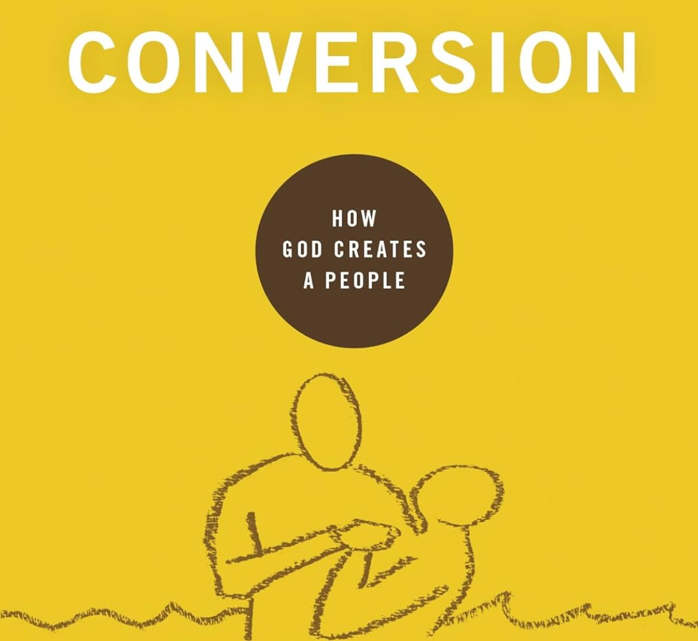

Conversion (Book Review)
November 18, 2024

“Show me someone’s doctrine of conversion, and I can tell you a lot about his church.” The doctrine of conversion has vast implications for the health and purity of the local church. A faulty understanding of the means of conversion (the proclamation of the gospel) has generated the ills of the seeker-sensitive movement, and a lackadaisical insistence on the fruits of conversion (a repentant life) has led to rampant nominalism in our churches today.
In
Conversion, Michael Lawrence provides a clear exposition of what biblical conversion is and why it matters so much for the local church. He begins with the necessity of regeneration before conversion and the distinction between a moral life and a transformed heart. Then he moves to the human response in conversion, which is faith and repentance, contrasting this with the idea of a one-time “decision for Christ.” Then he explains the result of conversion in the Christian life and in the local body of believers, how, in conversion, God tears down the dividing walls to unite a people for himself.
In the final three chapters, Lawrence shows how this biblical doctrine of conversion should affect the way we approach our ministry. Understanding conversion correctly should lead us to evangelize boldly and honestly. It should also lead churches to look for the fruit of conversion before assuring somebody of their salvation. It also informs the church’s practice of discipline. Finally, Lawrence balances this by reminding us that churches cannot swing too far in the opposite direction and demand perfection from their members.
This book is very clear and defends the biblical, reformed understanding of regeneration, conversion, and sanctification. Lawrence manages to convincingly demonstrate that conversion has an impact on almost every aspect of the local church’s ministry and purity. His style of writing is clear, engaging, precise, and persuasive.
The chapter on evangelism is the best in the book. Lawrence reminds us that the supernatural character of regeneration should compel us to evangelize honestly and boldly, rather than “selling” the gospel to people’s felt needs. People are spiritually blinded from receiving Christ, and they cannot be manipulated into the kingdom of God by appealing to their inner desires. This is where our doctrine of conversion clearly separates us in the way we evangelize.
Lawrence’s final chapter was a rare and necessary corrective against the practice of being too harsh in assessing the fruit of conversion. We cannot be overzealous about church discipline or regenerate church membership, and we need to be reminded that sheep are sheep, and all of us are still sinners.
I would’ve liked to see a more nuanced discussion about the difference between conversion and making a “decision.” Lawrence is quick to attack the decisionism prevalent in 20th century evangelism, but conversion is still ultimately a decision of sorts: a decision to repent and trust in Christ. One-time decisions that do not result in fruit are clearly not true conversions, but a true conversion always begins with a decision.
Furthermore, I think the book would have benefited with more explanation about how genuine Christians can be assured of their salvation, since this is an important question people have about the topic of conversion. Lawrence explains, correctly, that “true assurance must ultimately be found by looking at Christ, not by looking for evidence of grace in our lives” (100), but he goes on to only explain the ways in which assurance can be found in seeing our growth as Christians (which is also correct). How does a Christian struggling with assurance ultimately find assurance in looking to Christ’s finished work on the cross? What if they are constantly questioning the sincerity of their faith or the authenticity of their spiritual growth?
Overall, Michael Lawrence has blessed the church with an important and approachable resource about the doctrine of conversion and why it is so important for churches today in how they approach ministry. This work, along with all the other books in the 9Marks Buliding Healthy Churches series, will be helpful for all readers, especially pastors and laypeople involved in ministry.
Purchase on
Amazon
Lawrence, Michael.
Conversion: How God Creates a People. 9Marks: Building Healthy Churches. Wheaton, IL: Crossway, 2017.